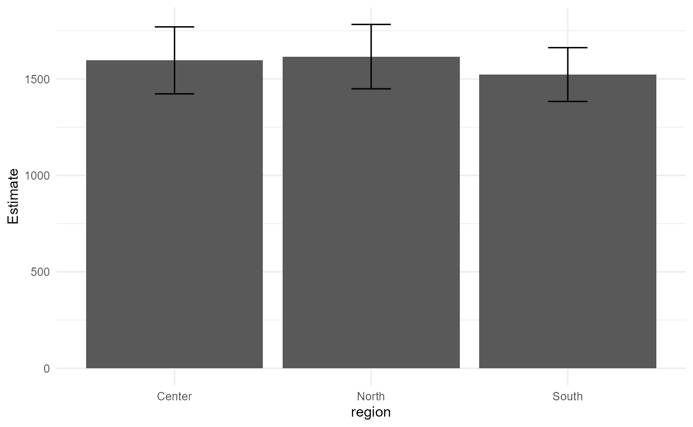
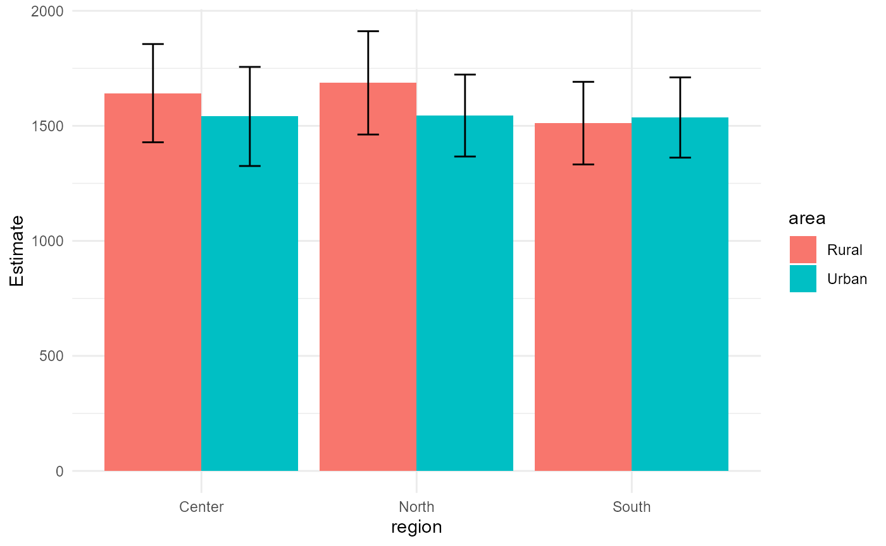
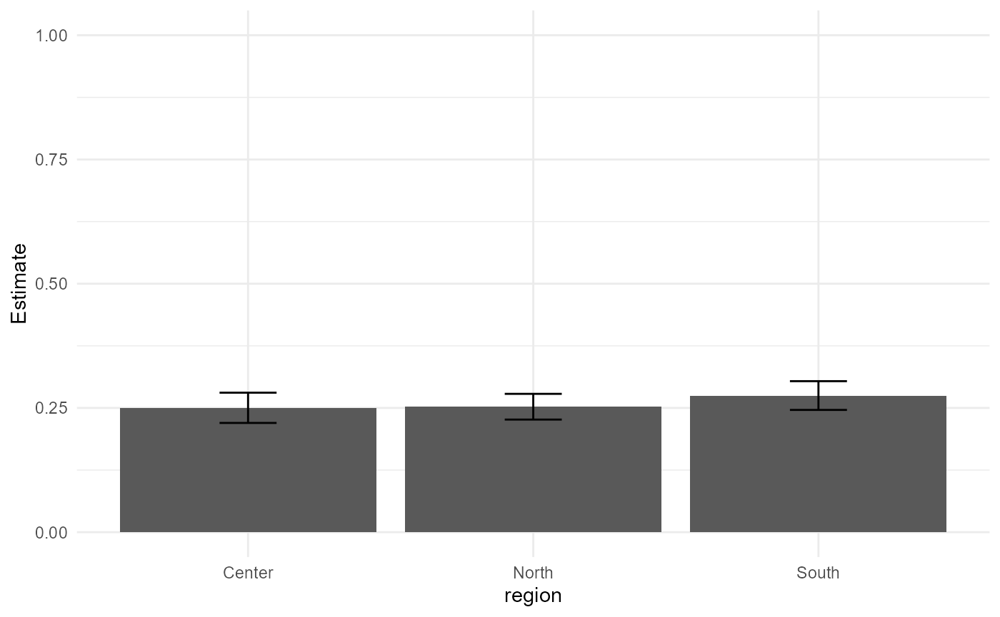

vignettes/intro_es.Rmd
intro_es.Rmdcomplexr es un paquete de R que proporciona un marco de trabajo orientado a tidy para el análisis de datos de encuestas complejas. Soporta:
Todas las funciones de estimación tienen en cuenta la estratificación, el agrupamiento y los pesos de muestreo desiguales, siguiendo el enfoque de linealización descrito en Lumley (2010) y Särndal et al. (1992).
Esta sección establece la notación estadística utilizada a lo largo de la viñeta, siguiendo las convenciones de Gutiérrez et al. (2025).
Sea la población finita de tamaño , y la muestra seleccionada bajo un diseño probabilístico . Para cada unidad , se define como el valor de la variable de interés. El total poblacional y la media poblacional se definen respectivamente como:
La probabilidad de que la unidad
sea incluida en la muestra se denota
.
El peso básico de diseño es
.
En la práctica, estos pesos se modifican para incorporar ajustes por no
respuesta o calibración a totales conocidos, obteniéndose los
pesos ajustados
.
En esta documentación,
denota los pesos finales disponibles en el archivo de microdatos
(variable weight).
El estimador de Horvitz–Thompson (HT) del total poblacional es (Horvitz and Thompson 1952):
y el estimador del tamaño poblacional se define como:
Cuando se trabaja con pesos ajustados , el estimador HT ponderado toma la forma .
La varianza del estimador HT se estima como (Särndal et al. 1992):
donde y son las probabilidades de inclusión de segundo orden. En la práctica se emplean métodos equivalentes como la linealización de Taylor o la replicación (jackknife, bootstrap), que no requieren el cálculo explícito de .
Para un diseño con estratos, unidades primarias de muestreo (UPM) en el estrato y observaciones en la UPM , el estimador del total es:
donde es el peso ajustado del individuo en la UPM del estrato .
Siguiendo a Kish (1965), el efecto del diseño se define como la razón entre la varianza del estimador bajo el diseño complejo y la varianza del mismo estimador bajo un muestreo aleatorio simple (MAS) de igual tamaño:
Un valor indica que el diseño complejo incrementa la varianza con respecto al MAS, mientras que señala una ganancia de eficiencia, típica de diseños estratificados con estratos homogéneos.
# Instalar desde GitHub
# install.packages("remotes")
remotes::install_github("stalynGuerrero/complexr")El paquete incluye generate_example_data(), que genera
un conjunto de datos jerárquico de tres niveles (UPMs → hogares →
individuos), representativo de un diseño de encuesta multietápica
estratificada.
data <- generate_example_data(n_upm = 100, seed = 123)
dplyr::glimpse(data)
#> Rows: 3,438
#> Columns: 15
#> $ strata <chr> "S3", "S3", "S3", "S3", "S3", "S3", "S3", "S3", "S3", "S3",…
#> $ upm <chr> "UPM1", "UPM1", "UPM1", "UPM1", "UPM1", "UPM1", "UPM1", "UP…
#> $ hogar_id <chr> "UPM1_H1", "UPM1_H1", "UPM1_H1", "UPM1_H1", "UPM1_H1", "UPM…
#> $ persona_id <chr> "UPM1_H1_P1", "UPM1_H1_P2", "UPM1_H1_P3", "UPM1_H1_P4", "UP…
#> $ weight <dbl> 1326.3970, 1326.3970, 1326.3970, 1326.3970, 1326.3970, 851.…
#> $ region <chr> "South", "South", "South", "South", "South", "Center", "Nor…
#> $ sexo <chr> "Male", "Female", "Male", "Female", "Female", "Male", "Fema…
#> $ area <chr> "Urban", "Urban", "Urban", "Urban", "Urban", "Rural", "Rura…
#> $ edad <dbl> 54, 42, 22, 35, 46, 41, 49, 63, 42, 8, 36, 0, 31, 21, 18, 2…
#> $ educacion <fct> Higher, Secondary, Higher, Higher, Higher, Higher, Secondar…
#> $ empleo <fct> Unemployed, Formal, Formal, Informal, Formal, Informal, Inf…
#> $ ingreso_pc <dbl> 1328.0991, 1328.0991, 1328.0991, 1328.0991, 1328.0991, 817.…
#> $ gasto_pc <dbl> 1100.2257, 1100.2257, 1100.2257, 1100.2257, 1100.2257, 623.…
#> $ pobre <int> 0, 0, 1, 0, 1, 0, 0, 0, 0, 0, 0, 1, 0, 0, 1, 0, 0, 0, 0, 0,…
#> $ ingreso2 <dbl> 1143.2572, NA, 1363.3893, 1477.1621, 1583.9139, NA, 663.904…| Variable | Tipo | Descripción |
|---|---|---|
strata |
character | Identificador de estrato () |
upm |
character | Unidad primaria de muestreo dentro del estrato |
hogar_id |
character | Identificador de hogar |
persona_id |
character | Identificador de individuo |
weight |
numeric | Peso ajustado (inverso de la prob. de inclusión, calibrado) |
region |
character | Dominio de estimación: Norte / Centro / Sur |
sexo |
character | Sexo: Hombre / Mujer |
area |
character | Área: Urbana / Rural |
edad |
numeric | Edad en años |
educacion |
factor | Nivel educativo: Primaria / Secundaria / Superior |
empleo |
factor | Condición de empleo: Formal / Informal / Desocupado |
ingreso_pc |
numeric | Ingreso per cápita del hogar () |
gasto_pc |
numeric | Gasto per cápita del hogar |
pobre |
numeric | Indicador binario de pobreza: |
ingreso2 |
numeric | Variable auxiliar de ingreso (10 % de valores faltantes) |
La simulación garantiza las siguientes consistencias:
NA en
educación.El ingreso del hogar sigue un modelo gamma jerárquico con efectos aleatorios de UPM y hogar:
donde es el efecto de UPM y es el efecto de hogar.
Para cargar sus propios microdatos utilice
read_survey_data(). Los formatos soportados se detectan
automáticamente a partir de la extensión del archivo.
# CSV
data <- read_survey_data("encuesta.csv")
# SPSS
data <- read_survey_data("encuesta.sav")
# Stata
data <- read_survey_data("encuesta.dta")
# Excel
data <- read_survey_data("encuesta.xlsx")La función retorna los datos como un tibble y adjunta
atributos de metadatos: source_path,
source_format, n_rows,
n_cols.
mutate_survey_data() crea nuevas variables a partir de
una lista nombrada de fórmulas unilaterales, evaluadas secuencialmente
en el entorno del marco de datos.
data <- mutate_survey_data(
data,
definitions = list(
log_ingreso = ~ log(ingreso_pc + 1),
ratio_gasto = ~ gasto_pc / ingreso_pc
)
)
dplyr::select(data, ingreso_pc, log_ingreso, ratio_gasto) |> head(4)
#> # A tibble: 4 × 3
#> ingreso_pc log_ingreso ratio_gasto
#> <dbl> <dbl> <dbl>
#> 1 1328. 7.19 0.828
#> 2 1328. 7.19 0.828
#> 3 1328. 7.19 0.828
#> 4 1328. 7.19 0.828as_survey_design_tbl() envuelve
survey::svydesign() y retorna un objeto
tbl_svy compatible con el ecosistema srvyr
/ survey (Lumley
2010).
design <- as_survey_design_tbl(
data = data,
weight = "weight",
strata = "strata",
cluster = "upm",
nest = TRUE
)
class(design)
#> [1] "tbl_svy" "survey.design2" "survey.design"Configuraciones soportadas:
| Configuración | Argumentos |
|---|---|
| Muestreo aleatorio simple (MAS) | solo weight
|
| Estratificado |
weight + strata
|
| Por conglomerados (etapa única) |
weight + cluster
|
| Estratificado multietápico |
weight + strata +
cluster
|
| Con corrección de población finita | cualquiera de los anteriores + fpc
|
La función valida que los pesos
sean estrictamente positivos
()
y sin valores faltantes, y opcionalmente verifica que las UPMs no se
compartan entre estratos (check_psu = TRUE).
Nota: Cuando un estrato contiene una única UPM (), la estimación de por linealización de Taylor no está definida. La función establece automáticamente
options(survey.lonely.psu = "adjust")para usar la aproximación conservadora centrada en la media del estrato (Cochran 1977).
describe_survey_design(design)
#> # A tibble: 1 × 7
#> n_obs n_strata n_clusters weight_min weight_max weight_mean weight_cv
#> <int> <int> <int> <dbl> <dbl> <dbl> <dbl>
#> 1 3438 5 100 205. 1500. 848. 0.444La tabla de diagnóstico reporta:
| Columna | Descripción |
|---|---|
n_obs |
Tamaño total de la muestra |
n_strata |
Número de estratos |
n_clusters |
Número de UPMs |
weight_min |
|
weight_max |
|
weight_mean |
|
weight_cv |
Todos los estimadores se calculan con estimate_survey().
La función retorna un tibble con las siguientes
columnas:
| Columna | Descripción |
|---|---|
variable |
Nombre de la variable objetivo |
estimator |
Tipo de estimador |
estimate |
Estimación puntual |
se |
Error estándar |
cv |
Coeficiente de variación |
deff |
Efecto de diseño |
lci |
Límite inferior del intervalo de confianza |
uci |
Límite superior del intervalo de confianza |
quality |
Etiqueta de precisión basada en el |
Etiquetas de precisión (basadas en el coeficiente de variación):
| Etiqueta | |
|---|---|
| Precisión muy alta | |
| – | Precisión alta |
| – | Precisión aceptable |
| – | Usar con precaución |
| Precisión baja |
El total poblacional ponderado se estima mediante el estimador HT:
La media ponderada (estimador de razón de Horvitz–Thompson) es:
La varianza de se estima por linealización de Taylor (Särndal et al. 1992):
r_media <- estimate_survey(
design = design,
variable = "ingreso_pc",
estimator = "mean"
)
r_media
#> # A tibble: 1 × 9
#> variable estimator estimate se cv deff lci uci quality
#> <chr> <chr> <dbl> <dbl> <dbl> <dbl> <dbl> <dbl> <chr>
#> 1 ingreso_pc mean 1579. 71.6 0.0453 8.05 1439. 1720. Very high precis…El estimador HT del total, bajo un diseño estratificado con UPMs, es:
Su varianza se estima por estratos y conglomerados:
donde se calcula dentro de cada estrato usando los residuos de los totales de UPM respecto a su media en el estrato.
r_total <- estimate_survey(
design = design,
variable = "ingreso_pc",
estimator = "total"
)
r_total
#> # A tibble: 1 × 9
#> variable estimator estimate se cv deff lci uci quality
#> <chr> <chr> <dbl> <dbl> <dbl> <dbl> <dbl> <dbl> <chr>
#> 1 ingreso_pc total 4607014476. 261136568. 0.0567 12.6 4.10e9 5.12e9 High p…Para una variable indicadora , la proporción poblacional se estima como:
La varianza de se aproxima por linealización de Taylor (Heeringa et al. 2017):
r_pobre <- estimate_survey(
design = design,
variable = "pobre",
estimator = "prop"
)
r_pobre
#> # A tibble: 1 × 9
#> variable estimator estimate se cv deff lci uci quality
#> <chr> <chr> <dbl> <dbl> <dbl> <dbl> <dbl> <dbl> <chr>
#> 1 pobre prop 0.259 0.00936 0.0361 1.57 0.241 0.277 Very high precis…Para una variable con categorías , la proporción de la categoría es:
La función construye automáticamente la variable indicadora para cada categoría:
r_empleo <- estimate_survey(
design = design,
variable = "empleo",
estimator = "prop"
)
r_empleo
#> # A tibble: 3 × 10
#> variable estimator estimate se cv deff empleo lci uci quality
#> <chr> <chr> <dbl> <dbl> <dbl> <dbl> <chr> <dbl> <dbl> <chr>
#> 1 empleo prop 0.331 0.00815 0.0246 1.03 Formal 0.315 0.347 Very h…
#> 2 empleo prop 0.341 0.00903 0.0265 1.25 Informal 0.323 0.359 Very h…
#> 3 empleo prop 0.328 0.00866 0.0264 1.17 Unemploy… 0.311 0.345 Very h…El estimador de razón de dos totales poblacionales es (Cochran 1977):
La varianza se estima por linealización de Taylor de primer orden:
Numérico / Numérico:
r_razon <- estimate_survey(
design = design,
estimator = "ratio",
numerator = "ingreso_pc",
denominator = "gasto_pc"
)
r_razon
#> # A tibble: 1 × 9
#> variable estimator estimate se cv deff lci uci quality
#> <chr> <chr> <dbl> <dbl> <dbl> <dbl> <dbl> <dbl> <chr>
#> 1 ingreso_pc_over_… ratio 1.34 0.00579 0.00432 NA 1.33 1.35 Very h…Categórico / Categórico — razón de trabajadores Formales respecto a Informales ():
r_razon_cat <- estimate_survey(
design = design,
estimator = "ratio",
numerator = "empleo",
denominator = "empleo",
ratio_num_level = "Formal",
ratio_den_level = "Informal"
)
r_razon_cat
#> # A tibble: 1 × 9
#> variable estimator estimate se cv deff lci uci quality
#> <chr> <chr> <dbl> <dbl> <dbl> <dbl> <dbl> <dbl> <chr>
#> 1 empleo_over_empleo ratio 0.970 0.0429 0.0442 NA 0.886 1.05 Very hi…Numérico / Categórico — ingreso promedio entre trabajadores formales, equivalente a :
r_razon_mix <- estimate_survey(
design = design,
estimator = "ratio",
numerator = "ingreso_pc",
denominator = "empleo",
ratio_den_level = "Formal"
)
r_razon_mix
#> # A tibble: 1 × 9
#> variable estimator estimate se cv deff lci uci quality
#> <chr> <chr> <dbl> <dbl> <dbl> <dbl> <dbl> <dbl> <chr>
#> 1 ingreso_pc_over_emp… ratio 4773. 242. 0.0507 NA 4299. 5247. High p…Los cuantiles se derivan de la función de distribución acumulada empírica ponderada (Woodruff 1952):
El cuantil de orden se define como:
Los intervalos de confianza se calculan con el método de linealización de Woodruff, que transforma el problema a la escala de la proporción acumulada:
r_cuant <- estimate_survey(
design = design,
variable = "ingreso_pc",
estimator = "quantile",
probs = c(0.10, 0.25, 0.50, 0.75, 0.90)
)
r_cuant
#> # A tibble: 5 × 10
#> variable estimator quantile estimate se cv deff lci uci quality
#> <chr> <chr> <dbl> <dbl> <dbl> <dbl> <dbl> <dbl> <dbl> <chr>
#> 1 ingreso_pc quantile 0.1 499. 28.0 0.0562 NA 444. 554. High pr…
#> 2 ingreso_pc quantile 0.25 736. 32.3 0.0438 NA 673. 800. Very hi…
#> 3 ingreso_pc quantile 0.5 1127. 42.0 0.0373 NA 1045. 1209. Very hi…
#> 4 ingreso_pc quantile 0.75 1895. 106. 0.0561 NA 1686. 2103. High pr…
#> 5 ingreso_pc quantile 0.9 3196. 221. 0.0691 NA 2763. 3629. High pr…En encuestas de hogares es frecuente estimar parámetros para subpoblaciones o dominios . El estimador de razón en el dominio es:
La estimación de se realiza sobre la muestra completa , preservando la estructura del diseño y evitando el sesgo por subsetting incorrecto (Lumley 2010).
El efecto de diseño para el dominio se define de forma análoga al DEFF global (Kish 1965):
donde es la varianza que se obtendría bajo un MAS restringido al dominio . Para la media de dominio, esta expresión se simplifica a:
con el tamaño muestral en el dominio, el tamaño poblacional estimado del dominio, y la varianza muestral no ponderada dentro del dominio. Valores indican que la conglomeración o la ponderación desigual inflan la varianza incluso dentro del dominio.
El argumento by controla los dominios de estimación:
r_region <- estimate_survey(
design = design,
variable = "ingreso_pc",
estimator = "mean",
by = "region"
)
r_region
#> # A tibble: 3 × 10
#> variable estimator region estimate se cv deff lci uci quality
#> <chr> <chr> <chr> <dbl> <dbl> <dbl> <dbl> <dbl> <dbl> <chr>
#> 1 ingreso_pc mean Center 1597. 88.6 0.0555 4.03 1423. 1770. High prec…
#> 2 ingreso_pc mean North 1616. 85.2 0.0527 3.62 1449. 1783. High prec…
#> 3 ingreso_pc mean South 1523. 71.1 0.0467 2.89 1384. 1662. Very high…Se admiten múltiples variables de dominio (dominios cruzados ):
r_region_area <- estimate_survey(
design = design,
variable = "ingreso_pc",
estimator = "mean",
by = c("region", "area")
)
r_region_area
#> # A tibble: 6 × 11
#> # Groups: region [3]
#> variable estimator region area estimate se cv deff lci uci
#> <chr> <chr> <chr> <chr> <dbl> <dbl> <dbl> <dbl> <dbl> <dbl>
#> 1 ingreso_pc mean Center Rural 1642. 109. 0.0663 2.91 1429. 1856.
#> 2 ingreso_pc mean Center Urban 1541. 110. 0.0713 3.44 1325. 1756.
#> 3 ingreso_pc mean North Rural 1687. 115. 0.0679 2.76 1462. 1911.
#> 4 ingreso_pc mean North Urban 1545. 90.9 0.0588 2.57 1367. 1723.
#> 5 ingreso_pc mean South Rural 1512. 91.6 0.0606 2.39 1332. 1691.
#> 6 ingreso_pc mean South Urban 1536. 89.0 0.0579 2.29 1362. 1711.
#> # ℹ 1 more variable: quality <chr>Proporciones por dominio:
r_pobre_region <- estimate_survey(
design = design,
variable = "pobre",
estimator = "prop",
by = "region"
)
r_pobre_region
#> # A tibble: 3 × 10
#> variable estimator region estimate se cv deff lci uci quality
#> <chr> <chr> <chr> <dbl> <dbl> <dbl> <dbl> <dbl> <dbl> <chr>
#> 1 pobre prop Center 0.250 0.0155 0.0621 1.42 0.220 0.281 High preci…
#> 2 pobre prop North 0.252 0.0132 0.0523 1.11 0.227 0.278 High preci…
#> 3 pobre prop South 0.275 0.0148 0.0537 1.24 0.246 0.304 High preci…format_results_table() redondea columnas numéricas,
calcula el
o los intervalos de confianza faltantes, y garantiza que la salida
contenga siempre las columnas estimate, se,
cv, lci y uci.
format_results_table(r_region, digits = 3)
#> # A tibble: 3 × 10
#> variable estimator region estimate se cv deff lci uci quality
#> <chr> <chr> <chr> <dbl> <dbl> <dbl> <dbl> <dbl> <dbl> <chr>
#> 1 ingreso_pc mean Center 1597. 88.6 0.056 4.03 1423. 1770. High preci…
#> 2 ingreso_pc mean North 1616. 85.2 0.053 3.62 1449. 1783. High preci…
#> 3 ingreso_pc mean South 1523. 71.1 0.047 2.89 1384. 1662. Very high …plot_results_bar() genera un gráfico de barras de
ggplot2 con barras de error que representan el intervalo de
confianza
.
Las variables de dominio se detectan automáticamente como cualquier
columna que no forme parte de las columnas de salida estándar.
plot_results_bar(r_region)
Ingreso per cápita por región — con IC 95%
plot_results_bar(r_region_area)
Ingreso per cápita por región y área — con IC 95%
Los gráficos de proporción restringen automáticamente el eje a :
plot_results_bar(r_pobre_region)
Tasa de pobreza por región — con IC 95%
El paquete incluye una aplicación Shiny interactiva completa que cubre todo el proceso de análisis:
Inicie la aplicación con:
ComplexSurvey_app()
library(complexr)
# 1. Generar / cargar datos
data <- generate_example_data(n_upm = 100, seed = 2024)
# 2. Derivar nuevas variables
data <- mutate_survey_data(
data,
definitions = list(
log_ingreso = ~ log(ingreso_pc + 1)
)
)
# 3. Construir diseño muestral (estratificado multietápico)
design <- as_survey_design_tbl(
data = data,
weight = "weight",
strata = "strata",
cluster = "upm",
nest = TRUE
)
# 4. Diagnosticar el diseño
describe_survey_design(design)
#> # A tibble: 1 × 7
#> n_obs n_strata n_clusters weight_min weight_max weight_mean weight_cv
#> <int> <int> <int> <dbl> <dbl> <dbl> <dbl>
#> 1 3371 5 100 208. 1498. 850. 0.439
# 5. Estimar media por dominio y formatear
res <- estimate_survey(
design = design,
variable = "ingreso_pc",
estimator = "mean",
by = c("region", "area")
)
format_results_table(res, digits = 2)
#> # A tibble: 6 × 11
#> variable estimator region area estimate se cv deff lci uci quality
#> <chr> <chr> <chr> <chr> <dbl> <dbl> <dbl> <dbl> <dbl> <dbl> <chr>
#> 1 ingreso… mean Center Rural 1559. 103. 0.07 2.13 1357. 1762. High p…
#> 2 ingreso… mean Center Urban 1482. 85.7 0.06 3.03 1314. 1650. High p…
#> 3 ingreso… mean North Rural 1540. 106. 0.07 2.76 1331. 1748. High p…
#> 4 ingreso… mean North Urban 1512. 71.0 0.05 1.71 1373. 1652. Very h…
#> 5 ingreso… mean South Rural 1520. 86.8 0.06 2.65 1349. 1690. High p…
#> 6 ingreso… mean South Urban 1474. 77.3 0.05 1.89 1322. 1625 High p…
sessionInfo()
#> R version 4.5.2 (2025-10-31 ucrt)
#> Platform: x86_64-w64-mingw32/x64
#> Running under: Windows 11 x64 (build 26200)
#>
#> Matrix products: default
#> LAPACK version 3.12.1
#>
#> locale:
#> [1] LC_COLLATE=Spanish_Colombia.utf8 LC_CTYPE=Spanish_Colombia.utf8
#> [3] LC_MONETARY=Spanish_Colombia.utf8 LC_NUMERIC=C
#> [5] LC_TIME=Spanish_Colombia.utf8
#>
#> time zone: America/Bogota
#> tzcode source: internal
#>
#> attached base packages:
#> [1] stats graphics grDevices utils datasets methods base
#>
#> other attached packages:
#> [1] complexr_1.0.1
#>
#> loaded via a namespace (and not attached):
#> [1] utf8_1.2.6 sass_0.4.10 generics_0.1.4 tidyr_1.3.2
#> [5] srvyr_1.3.1 lattice_0.22-9 digest_0.6.39 magrittr_2.0.5
#> [9] RColorBrewer_1.1-3 evaluate_1.0.5 grid_4.5.2 fastmap_1.2.0
#> [13] jsonlite_2.0.0 Matrix_1.7-5 DBI_1.3.0 survival_3.8-6
#> [17] promises_1.5.0 purrr_1.2.2 scales_1.4.0 textshaping_1.0.5
#> [21] jquerylib_0.1.4 cli_3.6.6 shiny_1.13.0 mitools_2.4
#> [25] rlang_1.2.0 splines_4.5.2 withr_3.0.2 cachem_1.1.0
#> [29] yaml_2.3.12 otel_0.2.0 tools_4.5.2 dplyr_1.2.1
#> [33] ggplot2_4.0.3 httpuv_1.6.17 vctrs_0.7.3 R6_2.6.1
#> [37] mime_0.13 lifecycle_1.0.5 fs_2.1.0 htmlwidgets_1.6.4
#> [41] ragg_1.5.2 pkgconfig_2.0.3 desc_1.4.3 gtable_0.3.6
#> [45] pkgdown_2.2.0 pillar_1.11.1 bslib_0.10.0 later_1.4.8
#> [49] glue_1.8.1 Rcpp_1.1.1-1.1 systemfonts_1.3.2 xfun_0.57
#> [53] tibble_3.3.1 tidyselect_1.2.1 rstudioapi_0.18.0 knitr_1.51
#> [57] farver_2.1.2 xtable_1.8-8 htmltools_0.5.9 survey_4.5
#> [61] labeling_0.4.3 rmarkdown_2.31 compiler_4.5.2 S7_0.2.2